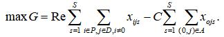
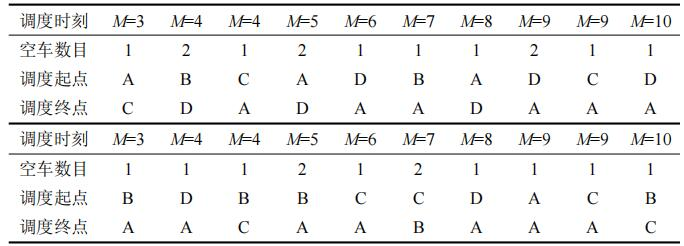

摘要
随着共享汽车行业蓬勃发展的态势，行业内出现模式过重、运营成本过高、无法盈利等问题。
共享汽车的“分时租赁”模式可以解决这个问题，为了控制成本、提高利润，本文建立基于目标规划算法的共享汽车站点间车辆综合调度系统，来制定对企业最有利的共享汽车调度方案。
针对问题1，
本文建立地理信息可视化模型来分析城市的共享汽车使用分布情况。首先，我们对附件所提供的数据进行预处理，剔除缺少关键信息的订单，删除用车时间小于2min且取还站点为同一站点的订单；
其次，对于空间分布情况，我们对全天或某一时段的汽车位置数据集通过Python算法构建空间热力分布图，通过聚类离散化的点，我们可以将城区分为五个部分，可以看出共享汽车分布情况为中部城区分布更为密集，且集中于各部分的中心区域；
最后，我们通过分析算出不同时段的热力中心及网格化统计数据，来分析某区域不同时段共享汽车使用频率，可以看出工作日与周末的出行时间分布呈现两种模式，工作日存在早晚“高峰”，而周末出行高峰主要集中在17：00至次日5：00时段，且周末总体车辆使用次数更多。
针对问题2，
本文以企业净利润最大、供需平衡、调度成本最低为目标函数建立基于目标规划算法的车辆调度模型，求得企业最有利的共享汽车调度方案。
首先，共享汽车的优化调度问题属于最优指派问题，优化目标是对企业最有利的共享汽车调度方案，我们设最大收益函数为目标函数，并转换为最小调度需求的成本函数，同时综合考虑供需平衡；
其次，我们以设站点空移车数为决策变量，基于实际情况作出假设，设立约束条件，以企业净利润最大为目标函数建立目标规划模型；然后，本文根据共享汽车调度问题的特征和对算法计算速度的高要求，采用遗传算法求解目标规划模型。
最后，本文根据共享汽车的特点，优化区域调度的模式（调度员利用拖车或驾驶的方式在站点之间通行），建立以运营公司收益最大为目标函数的混合整数规划模型，优化模型，并采用分支定界法求解模型，进一步求出最优调度方案（见5.5）。
经过灵敏度分析，该模型所求出的最优调度方案使得企业获得利润最高。
关键词：最优指派、目标规划、遗传算法、调度优化
一、问题重述
自2015年以来，共享汽车行业成蓬勃发展的态势。但因为模式过重、运营成本过高、无法盈利等问题，陆续有共享汽车公司因为资金链断裂而倒闭。消费者需要更轻更好的用车方式，而共享汽车的“分时租赁”模式很好地解决了这个问题。
但是这种方式的成本控制环节过多，导致盈利非常困难。所以，制定一个对企业最有利的共享汽车调度方案成为亟待解决的问题。
根据共享汽车的位置数据集中所提供的时间、经纬度等位置信息，以及停车点上停放的车辆的数量和车辆列表。我们需要建立数学模型分析该城市的共享汽车使用分布情况，并且制定一个对企业最有利的共享汽车调度方案。
二、问题分析
城市的共享汽车使用分布情况可通过地理信息可视化来进行分析，针对空间分布情况，我们可以对全天或某一时段的汽车位置数据集通过Python算法构建空间热力分布图，
来分析某个时段的共享汽车空间分布情况，进一步得出各个站点的使用频率；
针对时间分布情况，我们可以通过回归聚类分析算出不同时段的热力中心及网格化统计数据，来分析某区域不同时段共享汽车使用频率。
共享汽车的优化调度问题属于最优指派问题，优化目标是对企业最有利的共享汽车调度方案，我们可以调控区域调度数目、路程等方面来设立调度方案，
使得企业净利润最大、供需平衡、调度成本最低。基于上述分析，我们设调度数目、路程为决策变量，以企业净利润最大为目标函数，同时考虑汽车的供需平衡、调度成本等方面，建立目标规划模型，求得企业最有利的共享汽车调度方案。
三、模型假设
1.假设每个站点停车位都能停一辆共享汽车，且车辆在站点时，默认与充电桩连接充电；
2.假设所有电动汽车均为同一型号，一辆车在任何时刻只能服务一个任务需求；
3.假设站点每个停车位均配备相同属性的充电桩，并且充电时单位时间增加续航相同；
4.假设车辆任何时刻续航里程已知且不会故障，不受外部因素如温度、湿度的影响；
5.假设车辆循环使用，完成一个任务后，如果续航满足要求，可以继续完成下一个任务；
6.假设运输成本仅有路程决定，不受外部因素如交通、路况的影响。
五、模型的建立与求解
5.1 分析该城市的共享汽车使用分布情况
本文通过地理信息可视化对城市的共享汽车使用分布情况进行分析，针对空间分布情况，
我们对全天或某一时段的汽车位置数据集通过Python算法构建空间热力分布图，来分析某个时段的共享汽车空间分布情况，进一步得出各个站点的使用频率；
针对时间分布情况，我们通过聚类回归分析求得不同时段的热力中心及网格化统计数据，进而分析某区域不同时段共享汽车使用频率。
5.1.1数据处理
数据清洗经以下5个步骤：①删除缺少关键信息的订单；②删除“用车时间”小于2min且取、还站点为同一站点的订单。
5.1.2基于马氏距离的红外异常样品剔除算法
针对附件给出的上万条数据，显然需要进行一些预处理。我我们选择了PCA结合马氏举例法剔除红外异常样品。先利用主成分分词(PCA)将数据降维，以消除众多信息共存中相互重叠的信息部分。
利用得分数计算马氏距离，将相似度低的原样本进行剔除。具体方法如下：
首先是计算得分，其中X为相关因子矩阵，P为载荷矩阵，n为样品数，m为变量数，N为主成分数。
然后计算校正集样品到平均光谱的马氏矩阵，其中M代表因子分析中得分阵的协方差阵，Ti 为样本i的得分向量。
而后检验样品中奇异样品存在的阈值范围。
当`D_i>=D_f`则认为相关因子与线路定价在主成分空间中相似，`D_i-D_f`值越小，相似度越高。
通过设置不同的阈值范围参数从而调节相似度的高低。
当e值越小，相似度越低，成为异常因子的可能性越大。
通过此模型对附件数据预处理，异常数据的直观反映如下图所示。
因此，利用马氏距离法能有有效剔除样品集中存在的异常样品，提高了校正模型的预测能力。
5.1.3基于Python算法构建热力分布图对共享汽车空间分布进行分析
本文通过地理信息可视化对城市的共享汽车使用分布情况进行分析，针对空间分布情况，我们对全天或某一时段的汽车位置数据集通过Python算法构建空间热力分布图，如下所示。
由图可知，在某天中，在空间中的共享汽车使用分布情况是不均匀的，在整个城区全覆盖的情况下，主要集中分布的部分区域与其边缘差异较大，为了进一步分析空间中共享汽车的分布情况，
我们将城区化为五个区域，并将共享汽车分布情况离散化，如下图所示。
五个区域的中心经纬度坐标：A(32.11,34.79)、B(32.11,34.83)、C(32.08,34.78)、D(32.05,34.76)、E(32.05,34.80)。由上图可知，C区共享汽车使用分布最多，B区D区共享汽车使用分布较多，A区E区共享汽车使用分布较少；从整体看，共享汽车使用集中于城市中心部分；
从各区来看，共享汽车使用集中于各区中心部分。
5.1.4基于回归分析对不同时段的热力中心及网格化统计数据进行分析
本文首先用描述性统计的方法分析附件数据出行总量、出行时间和空间等特征，并用多元线性回归和二项logistic回归识别对比用户及共享汽车特征。
(1)用户用车频率模型
研究利用多元线性回归模型解决第一个问题，并用逐步法对自变量进行筛选处理，多元线性回归模型如下：
式中：`Y`为因变量；`x_i`为自变量（影响因素或相关因素）；`b_0`为常数项；
`b_i`为回归系数；`e`为随机误差。
(2)高峰时段出行者模型
研究通过二项logistic回归模型计算用户是高峰时段出行者的概率，
并用向前条件法筛选自变量。该模型的因变量Ｙ仅有０和１两个状态，设某用户是交通高峰时段出行者为`Y=1(P=1)`，则模型如下：
式中：`P/(1-P)`为优势比，即结果为1与结果为0的概率比值。
(3)订单时间分布
周末日均订单量多于工作日。周末订单占总订单量的1/3，周末日均订单为工作日的1.2倍。出行时间周分布图如图所示。
由上图可知，工作日与周末的出行时间分布呈现两种模式，工作日存在早晚“高峰”，而周末出行高峰主要集中在17：00～次日5：00时段，且周末总体车辆数更多。这是因为工作日期间休闲社交等活动只能于夜间发生，
而周末在日间即可提前释放休闲、社交等目的的出行，且其休闲社交等活动比例更大。
5.2 基于目标规划算法的共享汽车调度模型
共享汽车的优化调度问题属于最优指派问题，优化目标是对企业最有利的共享汽车调度方案，我们通过调控区域调度数目、路程等方面来设立调度方案，
使得企业净利润最大、供需平衡、调度成本最低。基于上述分析，我们设调度数目、路程为决策变量，以企业净利润最大为目标函数，同时考虑汽车的供需平衡、调度成本等方面，建立目标规划模型，求得企业最有利的共享汽车调度方案。
5.2.1决策变量
设站点空移车数xtij 决策变量，表示在时间结点t时，站点ij的空移车数。
5.2.2目标函数
设最大收益函数为目标函数，并转换为最小调度需求的成本函数，即
其中：t表示服务周期，将一个运营周期等分为M段，每段的开始为时间结点t={1,2,...,M}；
n表示网点个数；dij 表示站点i到站点j距离；
cij 表示从将共享汽车站点i调运到站点j所用的调运成本；
假设调运过程中单位距离调运成本相同，因为不同站点之间道路交通状况不同，所以利用Floyd算法求得调运成本cij ；
xtij 为决策变量，表示站点空移车数，且i≠j（xtij 为非负整数变量）。
5.2.3优化目标
根据方案，为使各个平台任务量尽量均衡，本文设任务均衡度为衡量分配方案综合均衡程度的指标，其定义为各个节点任务数标准差，如下所示：
其中pij 为第i个平台时第j个路口节点的任务数目，pj 为第j个路口节点的发任务数目；
ηij 为0-1决策变量。根据定义任务均衡度σ越小时任务越均衡，我们进一步得到工作量均衡度最小的目标函数为：
5.2.4约束条件
(1)在任何时刻车辆续驶里程均大于零，即
式中：lvk (t)表示t时刻车辆的续航里程。
t时刻，车辆有两种状态：车辆停在站点充电时lvk (t)=lvk0 (t)；
车辆从站点i行驶至站点j时lvk (t)=lvkij (t)（包括用户用车和空车调配）。
(2)整个运营系统中，各时段各站点车辆总数守恒，即
式中：Ati ={ati1 ,ati2 ,ati3 ,...atii ,...atin },
atij 表示有载客需求从站点i到站点j并且在t时段起运的任务数；
sit 表示站点i在t时刻车辆集合，sit ={v1 ,v2 ,...,vk }，
且初始时刻站点i所停车辆已知。
(3)假设本系统中的车辆最大续航里程大于任意两站点之间的距离，即
式中：L表示车辆最高续航里程。
(4)各时段各站点车辆数目小于该站点停车位容量pi 为
式中：Card(sit )表示在t时刻停在站点i车辆数目。
(5)车辆在站点之间通行的时间为
(6)车辆从站点i到达站点j时，保证站点j有足够的可用停车位ptj ，即
(7)车辆在行驶时，车辆续航里程的表达式为
式中：e表示车辆在充电时，车辆电量在达到满电前，车辆单位时间增加的续航里程；
v表示车辆行驶的平均速度，假设无论空车调配还是用户驾驶，车辆均匀速行驶，且行驶速度相同。
5.2.5补充约束
对于本模型而言，车辆的用车决策是无法约束的，为简化计算，做如下假设：
用户用车时优先使用满电车辆，车辆被使用后，若站点车数目大于∆k，则车辆充电至满电后方可使用；
若站点车辆数小于∆k，则需充电至车辆续航里程能够覆盖任意站点间距离且有一定余量后方可使用，保证站点有一定车辆，避免站点出现无车的情况。
例如，当初始时刻，车辆k从站点1到站点2后，车辆k续航减少d12 ，站点2多一辆续航为L-d12 的车辆，
此时站点2满电车辆足够，则车辆k充电至满电后方可再次使用。若站点2无足够满电车辆，则充电至续航为L-∆l方可使用，且优先使用满电车辆。
该假设能够保证用户所驾驶车辆续航足够，并且符合用户实际使用情况。
因此，补充约束条件如下：
(1)系统中车辆续航大于可用续航L-∆l方可成为可使用车辆，且可用续航需大于系统中任意两站点距离，即
(2)车辆被使用后，再次成为可用车辆所需时间如下：
式中：s' it 表示站点i在t时刻满电的车辆集合，
s' it ={v' 1 ,v' 2 ,...v' k }，
Card(s' it )表示站点i在t时刻停在站点i的满电车辆数目；∆k表示站点满电车辆数目限制。
5.2.6目标规划模型建立
根据上述分析，我们得到目标规划模型为
5.3 基于遗传算法对平台调度模型的求解
本文的车辆调度问题是NP-Hard难解问题，即本文所建立的目标规划模型求解复杂程度较高，求解存在不确定性，无法在有限时间内利用精确求解算法。
并且随着车辆规模的增加，求解难度程几何级增长。对于此类NP-Hard问题，根据共享汽车调度问题的特征和对算法计算速度的高要求，本文采用遗传算法求解该问题。
并且，遗传算法求解过程不依赖梯度信息，通过模拟自然界的进化过程来搜索最优解，是一种高效、并行、全局的搜索方法。遗传算法的运算过程如图所示。
5.3.1染色体编码与解码
根据车辆调度特点，本文中染色体编码包括被优化参数。设染色体的基因序列为，其由７部分构成，其中：表示车辆的平均行驶速度；表示车辆平均充电速度；表示站点距离；表示空车调配启动时刻；表示空车调配启动数量；表示空车调配起始站点；表示空车调配的目的站点。
5.3.2初始化种群
在满足编码的前提下，随机产生个个体，组成初始种群，记为
5.3.3 约束处理与适度函数
常见约束处理方法有３种：① 直接处理约束条件，在编码过程中加入约束条件；②计算过程中通过约束条件进行校验；③通过惩罚函数处理约束。
根据模型特点，本文采用直接处理约束的方法，以目标函数作为适度函数。
5.3.4 遗传操作
Step1.选择
选择是遗传算法中“适者生存”的进化现象，是对种群个体的评价方式，在很大程度上能够决定遗传算法的效果和收敛速度。
本文采用的是最佳个体保留的方案，采用轮盘赌的选择策略．先求得当前染色体的适度值fit(i)，再将所有染色体的适度值求和sumfit(i)=∑fit(i),
计算染色体的选择概率p(i)=fit(i)/sumf；计算各个染色体的累计概率ps (i)=fit(i)/sumf.
[0,1]中产生一个随机实数r，如果ps (i)>r就选择第一条染色体，否则选择满足ps (i-1) < r < ps (i)的第i条染色体。
Step2.交叉
采用启发式的交叉算子．设置交叉概率pe ，在父代种群中随机产生两个个体，然后在区间(0，1)中生成随机数p。
若p>pe ，父代染色体不进行交叉，反之，染色体交叉。
在交叉过程中，随机确定一个交叉点k，(1≤k≤n)，则在片段k之后，父代染色体进行交叉，k之前染色体保持不变．
该交叉方法指只改变了染色体n-k的部分，保留了片段，既能继承父代的优良基因，也体现了种群进化的思想。
Step3.变异
采用的是单片段变异方法．设种群的变异概率是pm ，然后在区间(0,1)中生成随机数p' ，
若p' >pm ，父代染色体不进行变异，不会产生新个体，反之，染色体变异。
产生一个随机整数f(1≤f≤n)，表示染色体的第f个片段进行变异。
将染色体的第f个片段重新进行编码，通过替换原来染色体片段而产生新染色体。
5.3.5 终止准则
遗传算法计算前必须设计终止算法准则，遗传算法是一种随机并行搜索算法，需要设计终止准则来终止循环，停止迭代，常见的终止算法有3种：
①达到预先设定目标；② 种群中最优个体在迭代中没有改进；③达到预先设定的进化代数。
预先设定进化代数能够很好地控制算法的求解精度和运行时间．综合考虑，本文采用预先设定进化点数，循环达到最大代数即停止迭代。
5.4 基于混合整数规划算法的共享汽车调度优化模型
本文根据电动共享汽车的特点，提出区域调度的模式，调度员利用拖车或驾驶的方式在站点之间通行。
建立以运营公司收益最大为目标函数的混合整数规划模型，优化模型，并采用分支定界法求解模型。
5.4.1决策变量
设站点空移车数xtij 决策变量，表示在时间结点t时，站点ij的空移车数。
5.4.2目标函数
目标函数为运营公司最大收益函数，有

式中：i∈p表示某站点i在某时间需要调离电动汽车至别的站点；
j∈D表示某站点j在某时间需要调配电动汽车到该站点；s为调度员编号，S表示调度人员数量；
Rer 表示每个调度任务的收益；xijs =1表示调度员s从取车点i取车前往送车点j，否则xijs =1=0；
O表示调度中心；C表示每班每个调度人员的工时费。
5.4.3约束条件
(1)调度员s从集合点出发，一个调度员只能有一个调度路径，即
(2)每个调度任务只能执行一次，即
(3)站点的访问时间是由其上一站点的访问时间加上调度时间的总和，即
式中：W表示每班调度人员的工作时长
(4)调度员取送车时间约束为
式中：tis 为连续时间变量；
ιi 表示取车任务站点i的服务时间；ιj 表示送车任务点j的服务时间。
(5)电动汽车在行驶过程中，行驶距离与所耗电量呈线性关系：
式中：pr 表示调度任务r所需电量;
e表示电动汽车充电时单位时间增加的电量。
(6)调度员在调度过程中电动汽车电量满足续航要求，有
5.4.4综合调度路径模型优化
该模型是一个混合整数线性规划模型，根据调度需求可以求解调度人员调度路径。
但是，在该模型中每个调度员的路线可以与其他调度员的路线交换，因此，该混合整数线性规划模型在可行域中包含多个最优解，
对应不同xijs 和tis 的值，不易求解，并且CPU会耗费更多的时间来求最优解。为了防止出现这种情况，对目标函数增加约束条件：
指定路线分配给调度人员，不允许调度员之间交换路线，则
显示最大满足需求的上限，则
5.4.5分支定界法求解模型
通过分析，关于调度人员的调度路径优化问题是一个混合整数规划模型，通常采用分支定界法（Branch and Bound）求解该模型。
分支定界法的核心思想是将求解问题分解成若干子问题，再将子问题分解，直到无法对子问题进行分解，分解子问题的过程称为分支。
分支的过程是估算目标值的界限，这个过程称为定界，定界可以预测解的趋势，判定分支的有效性和求出不能判定的分支。
将超出已知可行解集目标值的子问题删除，这个过程称为剪支，剪支可提高计算效率，加速收敛速度。
分支定界法的步骤包含分支、定界、再到剪支，将该过程循环进行，就是分支定界法的基本步骤。
分支定界法的计算前提是以深度优先为目标，估算目标函数在分支结点的上、下界。再将该估算的解与已求得的最优解进行比较，删除超过最优解的决策，从而提高最优解的求解速度。
5.3.2 模型的求解 5.5.1仿真取样
我们对题目中数据进行人工调度策略优化分析，一般我们在近似计算时，将1经度和1纬度相差距离都估为111km。
因此，根据我们划分的五个区域中心点经纬度，可以得到各共享站点间的距离，如下表所示：
由于用户出行的目的各不相同，各站点间的距离不能直接作为实际行驶距离。我们将这五个站点不同时刻的车辆列表进行合并，根据这5个站点中各车辆的移动27147条有效数据，换算出各站点间的实际行驶距离，如表2所示。
5.5.2调度需求模型实例模拟
取车辆最高续航里程L=120km；车辆充电速度=18km·h-1 ；站点之间单位里程调度成本cij =1元·km-1 ；用户用车时，每公里收益ωij =1元·km-1 ；
取L-∆l=30km；站点车辆数目限制∆k=2。
将30min划分为一个周期，1天共计48个周期，根据这5个站点的运营数据，订单主要集中在7：00am～8：00am之间，占总订单数的95.9%，
为简化计算，本文忽略10：00pm～7：00am 之间的订单。因此，1天共计30个周期，M=30。
采用MATLAB语言编写程序实现算法，根据数据规模，相关参数如下：取群体个数为20，最大遗传代数100，设置不同的交叉概率值和变异概率值，运行结果显示，交叉概率Pc0.8，
变异概率Pm=0.01计算结果最优。根据模型求出空车调度需求方案如表所示，该模型是基于在周期内全部满足用户104个订单的求解结果，共调度25次。
若不采用调度方案，从M=5时刻开始站点B就会出现用户无法还车的情况。

为使模型灵敏，再设定参数：种群大小为 40，迭代代数为2000。根据图7各地点的相对位置，设立地点的二维坐标。
为使车辆路径必须包括订单需求路径，在程序中用11个订单点代替18个地点，订单点坐标为其起终点的中点。订单点之间的连线表示订单间的车辆移动路径。其中关于车辆调度路径仿真结果如下图所示。
经过276次迭代可以得到最优或接近最优的仿真结果，得出实际需要车辆数为2，车辆固定成本与变动成本总和为335元。
由仿真结果可得到各车辆负责的订单，将订单涉及的地点展开后可得到更为清晰具体的车辆路径，如图所示，不同颜色分别对应图6中的车辆1与车辆2，其中箭头表示车辆的行驶方向。
由调度结果可知，两辆车执行文中订单任务时车辆总成本最小，这两辆车经过地点的先后顺序与空车调度具体数据如表所示
5.5.3调度路径优化模型实例模拟
调度路径优化模型采用Lingo11编写程序，模型输入参数。
假设调度员驾驶折叠电动自行车的行驶速度为vn ＝20km·h-1 ；车辆最高续航里程L=120km；设调度员月工资为8000元，故每个调度员1d的工时费C=267元；
共享汽车回收成本C' =1000元；每个调度任务的收益Rer =15.6元。
根据上表所示调度需求方案，通过计算，采用2个调度员可以完成调度任务的88%，同时满足收益最大化要求。两个调度员的具体调度路径分别为：
(1)O-A-C-C-A-D-A-E-A-C-A-B-A-B-C-C-A-D-A-C-A-O；
(2)O-B-D-A-D-B-A-D-A-D-A-D-A-B-A-C-B-C-A-B-C-O.
5.5.4收益分析
通过对比采用调度策略和扩大车辆、车位规模这两种方式，分析成本投入，以及各自带来的收益变化，
均以年作为计算投入与收益的时间范围。相关参数说明及取值如下表所示
通过计算，得到了增设车辆和车位、采用调度策略以及保持原状3种策略下的成本支出与订单收益，如图所示。
在用户用车需求增长的情况下，不增设停车位和车辆数目而采用人工调度优化策略，同比可以提升60%的订单服务量，订单收入增加89.4%，
虽然订单收入较增设停车位和车辆数目后的实际情况略有减少12%，但是相比增设停车位和车辆数目可以节约62.4%的成本投入。由此可见，运营公司采取人工调度策略的方式，
而非增设停车位和车辆数目的方式可为运营公司节约成本，增加公司收益。
六、模型检验与灵敏度分析
6.1 模型的评价
通过对比采用调度策略和扩大车辆、车位规模这两种方式，分析成本投入，以及各自带来的收益变化，均以年作为计算投入与收益的时间范围。
通过计算，得到了增设车辆和车位、采用调度策略以及保持原状3种策略下的成本支出与订单收益，如图所示
在用户用车需求增长的情况下，不增设停车位和车辆数目而采用人工调度优化策略，同比可以提升60%的订单服务量，订单收入增加89.4%，
虽然订单收入较增设停车位和车辆数目后的实际情况略有减少12%，但是相比增设停车位和车辆数目可以节约62.4%的成本投入。
由此可见，运营公司采取人工调度策略的方式，而非增设停车位和车辆数目的方式可为运营公司节约成本，增加公司收益。
6.2 灵敏度分析
为展示此优化方案的优越性，现将依据相同订单数据且满足订单用车需求的其他方案与优化结果进行对比，如表所示。其
中方案1至4为相同数据下，给定车辆数后按照算法求解的最优值。
由上表可知，对比以上五种方案，在相同订单数据下，本文方案在不确定车辆数与人员数的情况下，利用改进的遗传算法优化车辆与人员的联合调度路径，
可得到最适宜或较适宜的车辆数与人员数，进而达到总成本最低的目的。
为了对比本文算法的优越性，在相同车辆数与车辆路径的情况下，分别用改进突变算子树的多染色体遗传算法与未做改动的多染色体遗传算法对人员数求解。
得到的仿真最优值收敛曲线的对比如图所示。
由上图可知，改进过突变算子树的多染色体遗传算法迭代更快，结果更优。
七、模型评价与推广
7.1 模型的评价 7.1.1模型的优点
-模型考虑全面，尤其是在目标规划模型中，没有单方面考虑成本直接将路口归属于据其最近的平台，
而是企业最优的目标下综合考虑了调度车辆数、调度距离、成本最小及任务量均衡度最优的目标，所求方案比一般方案更加优良。
-对于目标规划模型遗传算法求解过程不依赖梯度信息，通过模拟自然界的进化过程来搜索最优解，是一种高效、并行、全局的搜索方法。
-分支定界法能够在计算过程中保证精度的前提下加快计算速度，减少计算量，通过剪支舍去没有希望的解从而求得问题的最优解，方便计算求解。
7.1.2模型的缺点
-模型在分配给平台时，只考虑了成本因素和任务量均衡因素，没有损耗率、人员选择、技术发展等其他因素，无法完全衡量企业利润和其他各个方面；
目标规划模型中，构成调度体系的各指标种类可以更加全面，可以构成更好的实际应用性。
-建立的调度路径模型是基于收益最大化的调度方案，因此在一些情况下并不能完全满足出现的调度需求，即无法满足所有的订单的用车需求。
在未来的研究中可以考虑采用激励用户的方法进行基于用户激励的自适应调度策略，作为对调度员人工调度的补充，进一步提高车辆利用效率和降低调度成本。
7.2 模型改进
我们选取了神经网络多元线性回归来改进我们多元线性回归模型
BP神经网络模型由输入层。隐含层和输出层组成，隐含层和输出层可以一层或多层构成。训练过程中输入信号从输入层通过作用函数，
逐层向隐含层、输出层传播，如果得不到期望输出，则转入反向传播，不断修改各层神经元连接权值，从而训练出最优神经网络模型。
对于一般模式的识别问题，3层网络可以很好地解决，这其中，隐含层神经元个数b与输入层神经元个数a之间的近似关系为b=2a+1。
我们选用了输入层神经元为7个，输出层神经元为1，因此，隐含层神经元个数可以选择为15个。
我们建立神经网络多元线性回归，其神经网络训练拟合度如图11。可以看出，拟合效果非常好
其均方误差图如下图所示。
我们发现，神经网络多元线性回归模型中`R^2`为0.9985，对比多元线性回归`R^2`的为0.9791，其精度有了明显提高，说明BP神经网络整体拟合度要高于多元回归模型。
7.3模型的推广
未来研究可基于运营数据，建立电动汽车用车需求预测模型，根据预测数据，提前规划共享站点位置、配置车辆和车位数。
八、参考文献
[1] DROR M, FORTIN D, ROUCAIROL C. Redistribution of self-service electric cars: a case of pickup and delivery[D]. Le Chesnay: Institut National de Recherche en Informatique et en Automatique, INRIA, 1998.
[2] HAFEZ N, PARENT M, PROTH J M. Managing a pool of self service cars[J]. Journal of Intelligent Manufacturing, 1997, 8(5): 459.
[3] LI X, MA J, CUI J, et al. Design framework of large-scale one-way electric vehicle sharing systems: a continuum approximate model[J]. Transportation Research Part B: Methodological, 2016, 88: 21.
[4] WANG H, LI Z, ZHU X, et al. A Full Service Model for Vehicle Scheduling in one-way electric vehicle car-sharing systems[C]// International Conference on Internet of Vehicles. Chengdu: Springer International Publishing, 2015: 25-36.
[5] FANTI M P, MANGINI A M, PEDRONCELLI G, et al. Apetri net model for fleet sizing of electric car sharing systems[C]// 2016 13th International Workshop on Discrete Event Systems(WODES). Xi’an: IEEE, 2016: 51-56.
[6] SHAHEEN S, MARTIN E W, BANSAL A. Zero-and low-emission vehicles in U.S. carsharing fleets: impacts of exposure on member perceptions [R]. Berkeley Transportation Library, 2015.
[7] MATTHEW B, SUSAN S, TUENJAIF, et al. Carsharing and station cars in asia: an overview of japan and singapore[j]. Transportation Research Record Journal of the Transportation Research Board, 2005, 1986(1445386): 106.
[8] CORREIA G H D A, ANTUNES A P. Optimization approach to depot location and trip selection in one-way carsharing systems [J ]. Transportation Research Part E: Logistics and Transportation Review, 2012, 48(1): 233.
[9] SHAHEEN S A, COHEN A P. Carsharing and personal vehicle services: worldwide market developments and emerging trends[J]. International Journal of Sustainable Transportation, 2013, 7(1): 5.